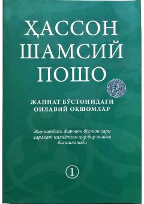

JBOila uchun islomiy hikmatlar va kundalik hayot saboqlari.
Ushbu kitob oila davrасida o'qish uchun mo'ljallangan bo'lib, Qur'oni karim, hadisi shariflar va solih zotlar hayotidan olingan hikmatli satrlarni o'z ichiga oladi. Muallif Hassan Shamsi Posho kundalik turmushda uchraydigan muammolarga islomiy yechimlar taklif etadi. Kitob jannat sari intilayotgan har bir oilaga bag'ishlangan.